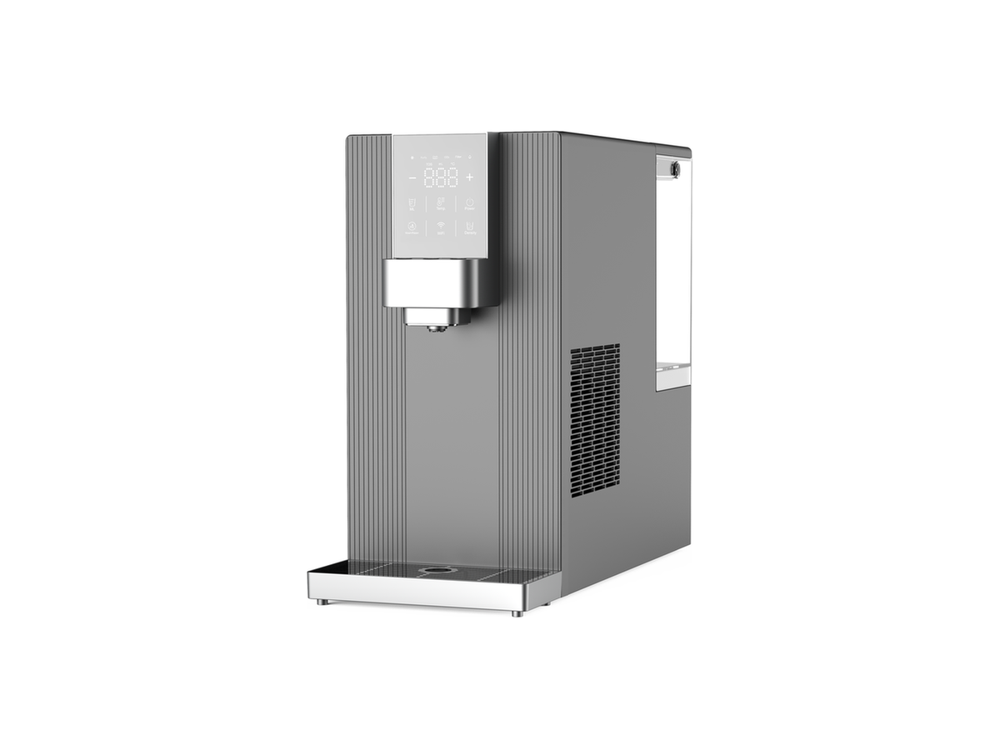

01 / Dapur
Dapur — bawah wastafel
Tersembunyi di bawah wastafel — RO bertenaga untuk dapur keluarga.
Model perwakilan:RP-U09 — 800–1400 GPD · 4 pilihan.
ROPureOEM / Studio Produk OEM
Mulailah dengan model yang sudah terkonfirmasi. Sesuaikan dengan pasar Anda. Setujui sampel Anda.
Jelajahi Model Diskusikan Proyek Anda
Pemilihan produk · Merek sendiri · Koordinasi ekspor

Belanja berdasarkan skenario
01 / Dapur
Tersembunyi di bawah wastafel — RO bertenaga untuk dapur keluarga.
Model perwakilan:RP-U09 — 800–1400 GPD · 4 pilihan.

02 / Countertop
Kopi yang baru digiling dan air murni RO dari satu unit countertop.
Model perwakilan:RP-C11 — bean-to-cup · air murni RO.

03 / Komersial
Air panas, dingin, dan es berdiri bebas untuk kantor, sekolah, dan ruang bersama.
Model perwakilan:RP-C23 — RO 100G · 50–100 orang.

04 / Seluruh rumah
Pelunakan sentral untuk seluruh rumah.
Model perwakilan:Seri RP-W01 — 32,000–64,000 grain · 3 ukuran.
Lihat lebih dekat
Model katalog terkonfirmasi — tinjau dulu spesifikasinya. MOQ 200 unit per model.
CountertopMesin kopi 4-in-1 bean-to-cup dengan pemurnian RO

CountertopAir soda, air dingin dan air panas — dua varian
 Bawah Wastafel
Bawah WastafelPemurni RO air hidrogen bawah wastafel
 Keran
KeranFilter keran dapat diputar 360°
 Shower
ShowerFilter shower persegi panjang
 Bawah Wastafel
Bawah WastafelSistem RO kartrid tarik tanpa alat
 Countertop
CountertopPemurni RO dengan teko pemanas
 Countertop
CountertopPemurni RO dengan es, air panas dan dingin

OEM vs ODM
Pilih model terkonfirmasi dan jadikan milik Anda: logo, warna, filter, keran, kemasan.
Sesuaikan struktur, fungsi, dan cetakan dengan brief Anda. Setiap brief membutuhkan penilaian teknis terlebih dahulu.
Dari model menjadi merek Anda
Pabrik & QC


Foto pabrik dan QC: produksi, pengujian, dan pengiriman.
Sertifikasi
Beri tahu kami model dan pasar target Anda — kami mengonfirmasi daftar pastinya sebelum Anda memesan.
Pasar umum:UE · Inggris · AS · Timur Tengah · Asia Tenggara · Australia
Pasar lain, termasuk CB jika berlaku, dikonfirmasi per model saat bertanya.

FAQ Beranda
200 unit per model.
Ya — sampel berbayar, dan biayanya dikembalikan pada pesanan massal pertama Anda. Setujui sampel, branding, dan kemasan yang disertakan, sebelum produksi massal.
Lead time dikonfirmasi per penawaran — tergantung model, jumlah, dan sertifikasi.
Pembayaran jatuh tempo sebelum pengiriman. Kami tidak menawarkan pembayaran kredit.
Dikonfirmasi per pasar, per model, dan per pesanan. Beri tahu kami model dan pasar target Anda, dan kami akan mengonfirmasi daftar pastinya sebelum Anda memesan.
Wawasan

Panduan pembelian
MOQ adalah 200 unit per model untuk pemurni air merek sendiri. Sampel dulu, biaya dikembalikan pada pesanan massal pertama Anda, 40 hari pengiriman setelah persetujuan sampel.

Panduan pembelian
Sesuaikan kapasitas RO dengan air umpan Anda sebelum memilih model — kapasitas countertop, bawah wastafel, dan dispenser dibandingkan.

Panduan pembelian
Tegangan dan frekuensi dapat disesuaikan dengan negara target — konfirmasikan per model dan pesanan.
Beri tahu kami pasar, jenis produk, dan jumlah Anda.